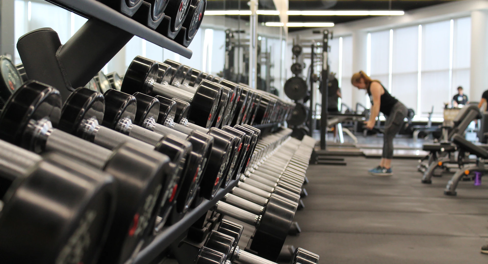

Cerca, desde el primer día.
Manual
de marca.
Un gimnasio de barrio.
Una identidad que recibe y acompaña.
Una mancuerna.
Un lugar reconocible.
Grafito para dar claridad. Un pequeño plato Mandarina para dar carácter. El logo no necesita efectos para funcionar.
Principal
Maestro conservado, mínimo 144 px. Web temporal: solo «Target gym», Outfit 500 en grafito, sin símbolo. Cabecera 28,8 px; pie 25,6 px; espaciado −0,04 em.
Una tinta
Para reproducción monocroma.
Símbolo
Desde 24 px en usos generales. Favicon temporal: inicial T, no Mancuerna.
Protección: media anchura del símbolo por lado (16 px a 164 px de ancho), escalada proporcionalmente. No deformar, girar, agregar sombras ni cambiar colores. Producción física: prueba específica. No se afirma registro jurídico.
Blanco primero.
Mandarina, donde importa.
El naranja destaca decisiones, no ocupa la página. Blanco y grafito sostienen el sistema.
Gris secundario
#5C636B
Ayudas y descripciones.
Gris claro
#F5F6F7
Filtros y agrupaciones.
Línea
#D8DDE2
Separación decorativa.
Legibilidad antes que color
Grafito sobre blanco: 13,28:1. Sobre Mandarina: 5,15:1. No usar texto blanco sobre Mandarina. Campos y botones secundarios: borde #737B85.
Error: #991B1B / #FEF2F2. Confirmación: #166534 / #F0FDF4. Acompañar siempre con texto. Los HEX son referencias de pantalla, no equivalencias CMYK/Pantone certificadas.
Qué bueno
que viniste.
Outfit 500 / Titulares y nombres de actividad
Musculación, cardio y clases grupales. Con acompañamiento, desde tu primer día.
DM Sans 400–500 / Lectura, navegación y controles
Una jerarquía clara
Portada: 54–92 px en escritorio.
Título de página: 40–60 px.
Lectura: 16 px / 1,6.
Ayudas: 13,6–14,4 px.
Palabras que orientan
Voseo argentino, directo y amable. «Ver clases», «Mi membresía», «Reservar lugar». Sin presión corporal ni promesas vacías.
Un error explica qué pasó y cómo continuar. No se fingen éxitos.
Fuentes variables locales bajo SIL Open Font License. Se entregan los archivos WOFF2 y sus licencias. Sin dependencias de servicios externos de fuentes.
Amable también
al usarlo.
Formas con función
Botón: radio 16 px.
Campo: 12 px.
Panel: 20–24 px.
Arco: solo en la foto protagonista.
Controles principales: al menos 44 × 44 px.
Una entrada para cada intención
«Asociate»: plan y pago.
«Ya soy socio»: ingresar.
«Mi espacio»: membresía y agenda.
«Acceso del equipo»: gestión.
Equipo: navegación lateral, pendientes primero y sin pie comercial. Misma identidad y autenticación.
Avisos: confirmación 4 s, error 8 s; cierre manual y foco útil. Errores de campos/paneles persistentes. Menú: 220 ms y Escape. Planes A. Clara: blanco, texto/foco Grafito, duración gris y acción Mandarina; filas centradas, total por período y tarifas por método. Precio adaptado a la tarjeta, sin cortes ni decimales cero; conserva centavos. Hover: #FFAD73 principal, #E8EBEE secundario, transición 220 ms sin mover controles. Sin animación con movimiento reducido; deshabilitados sin cambios. Tarjeta: pago presencial pendiente. Panel estable, historial conservado.
Cerca, sin llenar
todo de color.

Fotografía honesta
La web no muestra leyenda bajo la foto por pedido del usuario. Se conserva aquí su origen/licencia. Reemplazarla por imágenes autorizadas antes de presentarla como instalaciones reales.
Una identidad activa
Maestros SVG, fuentes y licencias, tokens CSS y normas completas acompañan esta entrega. Las exploraciones anteriores son antecedentes, no variantes vigentes.
Confirmar datos institucionales antes de publicar. No implica despliegue, registro marcario ni certificación de impresión o accesibilidad.